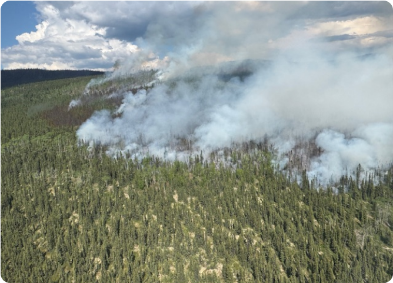
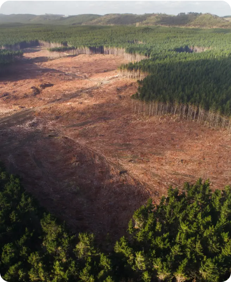
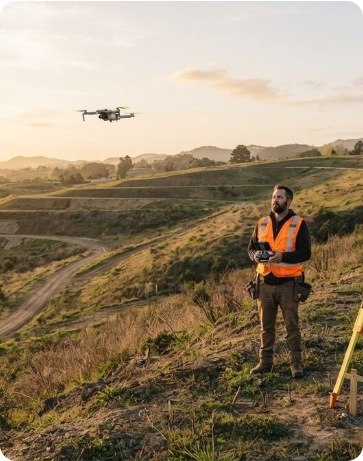
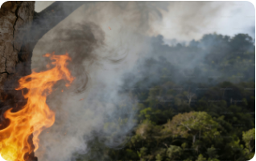
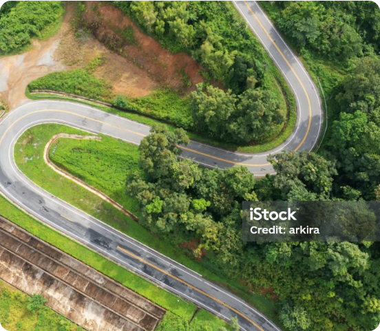
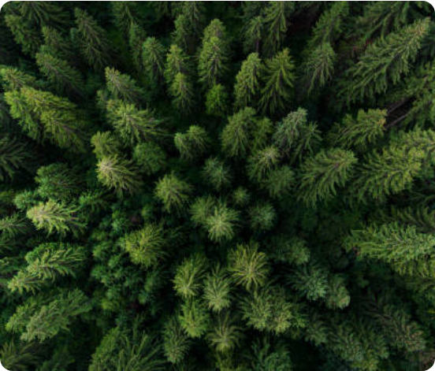
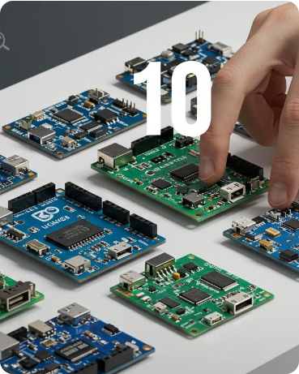
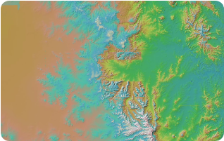

DRONES INTELIGENTES
Línea de Investigación: Desarrollo de Software y Sistemas de Información · Aporte directo a los ODS 13 (Acción por el Clima) y ODS 15 (Ecosistemas Terrestres).
REALIDAD ACTUAL Y PROPUESTA IA
Cambio Climático
Sequías prolongadas inflaman bosques y pastizales, reduciendo la absorción de $\text{CO}_2$ y liberando más gases de efecto invernadero.
Vigilancia Lenta
Rondas humanas a pie, avisos telefónicos tardíos y satélites que demoran horas y quedan bloqueados por nubes o neblina.
Visión Artificial IA
Drones bajo las nubes con algoritmos que reconocen conatos de fuego y claros de tala sin confundir neblina ni sol.
Alerta y Mapas GIS
Notificación web/móvil en segundos con coordenadas GPS y base de datos para mapas de calor (ODS 13 y ODS 15).
EVIDENCIA ESTADÍSTICA MUNDIAL
- • FAO (2025): De las 4 140 millones de ha de bosques del planeta, el fuego afecta 261 millones de ha cada año.
- • Goldman et al. (2026) · WRI & GLAD: Las olas de calor quemaron el doble de árboles que hace dos décadas (> 11 campos de fútbol/minuto).
ESCENARIO CRÍTICO EN EL PERÚ
El Perú figura entre los 10 países del mundo con mayor pérdida de bosque primario tropical por ampliación agrícola, pasturas y actividades extractivas (Goldman et al., 2026):
IMPACTO EN LA SIERRA LIBERTEÑA
Según el COER La Libertad (Agraria.pe, 2024), se registraron +42 incendios forestales en una temporada crítica, destruyendo 2 990 hectáreas entre pastizales de ichu, bosques de eucalipto y pino, y cultivos de trigo, cebada y tarwi, con 41 viviendas afectadas y pérdida de ganado.
La provincia más golpeada fue Santiago de Chuco (+1 000 ha quemadas), seguida por Otuzco, Sánchez Carrión, Bolívar y Pataz. Esto destruye los colchones naturales de agua en las cabeceras de cuenca que abastecen a los valles liberteños y erosiona el suelo agrícola.
PROBLEMA Y OBJETIVOS DE INVESTIGACIÓN
¿Cómo influye el sistema con drones inteligentes en el tiempo de detección temprana en zonas vulnerables de La Libertad 2026?
Determinar el impacto del sistema en optimizar los tiempos de detección temprana y reporte de incendios y deforestación.
OE1: Medir exactitud vs. falsos positivos (sol/neblina).
OE2: Comparar tiempo de transmisión frente al satélite.
OE3: Evaluar la eficiencia en estructurar el historial georreferenciado para proyectar mapas de calor.
ANÁLISIS DE MARCOS TEÓRICOS (2023–2026)
En la revisión documental e informativa de los 7 estudios indexados en Scopus / SJR (Q1/Q2) se identificó una tendencia clara y un vacío teórico en los Andes:
1. Arquitecturas Especializadas
Los estudios de incendios (Saydirasulovich, Shamta, Yun, Luo, Ma) coinciden en usar redes de una sola etapa YOLOv5, YOLOv8 y YOLO11 para video en tiempo real; mientras que en deforestación (Md Jelas, Borse) usan segmentación semántica U-Net, DeepLabV3+ y VGG16 con coordenadas espaciales.
2. Brecha Teórica en los Andes Peruanos
La literatura estudió los incendios y la tala como dos problemas separados con programas distintos; pero en el Perú (Defensoría, 2024; Agraria.pe, 2024) la tala/desmonte y las quemas agrícolas ocurren al mismo tiempo, exigiendo unificarlos en un solo sistema de información.
ANTECEDENTES CIENTÍFICOS (2023–2024)

YOLOv8 + BiFormer + GSConv: Logra 79,4 % AP en humo (+3,3 % sobre base), con 71,3 % en focos pequeños y 92,6 % en columnas grandes.

U-Net con atención y DeepLabV3+: Logra 92,78 % a 98,14 % de exactitud separando bosque sano de tala (>98 % con drones en la Amazonía peruana).

Dron cuadricóptero + NVIDIA Jetson Nano + Raspberry Pi + GSM. 96 % exactitud (CNN-RCNN/YOLOv8) y 89 % en vuelo real (~25 min batería).
ANTECEDENTES CIENTÍFICOS (2025–2026)

YOLOv8 + SPDConv + MLCA (>3 200 fotos). Sube sensibilidad +5,5 % y reduce parámetros en 43,8 % (5,96 M) para focos tras ramas.

YOLO-UFS (MobileNetV4 + BiFPN) entrenado con neblina y sol. 91,3 % mAP, -74 % peso (7,4 MB) a 30 FPS en Jetson Nano.

AETDA (VGG16 + YOLOv8) en 10 400+ árboles (<10 cm/px). Logra 98,39 % exactitud, AUC 0,95 y archivos GeoJSON.

AHE-YOLO (YOLO11 + ADown + EMBC) en 5 118 fotos día/noche. 94,8 % mAP, 85,1 % recall, solo 3,5 MB y 333,3 FPS.
RESULTADOS OE1: EXACTITUD VS. FALSOS POSITIVOS
Para evitar falsas alarmas en la sierra liberteña es indispensable añadir filtros de atención visual y entrenar con muestras negativas reales de neblina matutina y brillo solar:
COMPRESIÓN DE IA Y TIEMPO DE RESPUESTA
Yun et al. (2025)
Reduce 43,8 % de parámetros (5,96 M) y 43,3 % de peso de archivo con atención MLCA sin sobrecargar el procesador del dron.
Luo et al. (2025)
Reducción > 74 % del peso computacional con bloques MobileNetV4, corriendo fluido a 30 FPS reales en placa Jetson Nano.
Ma et al. (2026)
Comprime AHE-YOLO11 a solo 3,5 MB (1,56 M parámetros) alcanzando 333,3 FPS (+16,5 %) en laboratorio.
Shamta y Demir
Envía solo foto de alerta + GPS por red GSM en segundos frente a las horas que tardan los satélites o rondas a pie.
HISTORIAL GEORREFERENCIADO Y GEOJSON
Resolución < 10 cm/píxel
Borse et al. (2025): Supera los 1–5 m/píxel del satélite en > 10 400 árboles, logrando 98,39 % con VGG16 y AUC 0,95 con YOLOv8.
> 98 % en Amazonía Peruana
Md Jelas et al. (2024): Redes U-Net y DeepLabV3+ (92,78 %–98,14 %) automatizan en minutos el mapeo forestal que tomaba semanas.
Polígonos GeoJSON y Mapas

Guardar detecciones con latitud, longitud y fecha en GeoJSON / Shapefiles evita guardar videos pesados y genera mapas de calor mes a mes.
TABLA 1. COMPARACIÓN CIENTÍFICA (SCOPUS 2023–2026)
| Autor (Año) | Modelo / Sistema | Exactitud y Falsos Positivos (Obj. 1) | Rendimiento y Peso (Obj. 2) | Georreferenciación (Obj. 3) |
|---|---|---|---|---|
| Saydirasulovich (2023) | YOLOv8 + BiFormer + GSConv | 79,4 % AP humo (71,3 % pequeño / 92,6 % grande) | GSConv reduce memoria en vuelo | Solo detección visual en vuelo |
| Md Jelas et al. (2024) | U-Net + DeepLabV3+ | 92,78 %–98,14 % tala (>98 % Perú) | Mapeo automático en minutos | Segmentación por píxeles e historial |
| Shamta y Demir (2024) | Jetson Nano + RPi + YOLOv8 | 96 % clasificación / 89 % en vuelo | Alerta GSM inmediata (~25 min bat.) | Envía foto + latitud/longitud GPS |
| Yun et al. (2025) | YOLOv8 + SPDConv + MLCA | +5,5 % sensibilidad (>3 200 fotos) | -43,8 % parámetros (5,96 M) | Focos pequeños tras ramas en montaña |
| Luo et al. (2025) | YOLO-UFS (MobileNetV4) | 91,3 % mAP (filtra sol y neblina) | -74 % peso (7,4 MB a 30 FPS) | Estabilización frente al viento |
| Borse et al. (2025) | AETDA (VGG16 + YOLOv8) | 98,39 % exactitud (10 400 árboles) | AUC 0,95 rápido por copa | GeoJSON y Shapefiles (<10 cm/px) |
| Ma et al. (2026) | AHE-YOLO (YOLO11) | 94,8 % mAP / 85,1 % sensibilidad | Solo 3,5 MB y 333,3 FPS | Mapas térmicos de activación |
DISCUSIÓN CRÍTICA Y PROPUESTA ANDINA
CONCLUSIÓN GENERAL · UCV 2026
Unir drones inteligentes (<10 cm/píxel), algoritmos ultraligeros (YOLO11 de 3,5 MB / U-Net >98 %), cámaras térmicas, radio LoRaWAN y bases de datos GeoJSON responde de manera integral a la emergencia forestal en La Libertad.